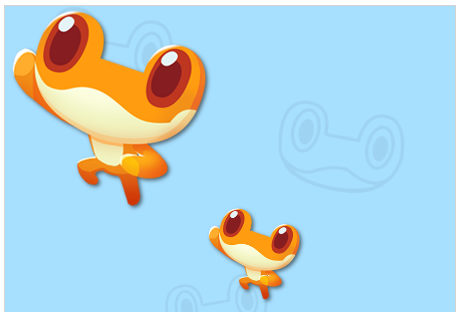

图片 image¶
image(src, x, y, w, h)
/**************************
src - 图片地址，图片需要从同一个网站地址，或者支持跨域访问
x, y - 图片左上角顶点的位置
...
图片第一次绘制时需要从服务器下载，因此可能需要一段时间后才能绘制出来
如果覆盖了后面的图像，重新运行代码即可
**************************/
由于浏览器安全的限制，部分网络上的图片不支持跨域的条件，就不可以在画布中使用。
var url1 = "https://rss.leaplearner.com/Image/Bgs/Alarm_bg_01.png";
var url2 = "https://rss.leaplearner.com/Image/Bgs/bluebg.jpg";
// 使用图片铺满整个屏幕，利用canvas的属性，可以用来设置背景
image(url1, 0, 0, canvas.width, canvas.heigh);
// 不带任何参数，默认显示图片原始大小
image("https://rss.leaplearner.com/Image/Role/Frog1.png");
image("https://rss.leaplearner.com/Image/Role/Frog1.png", 200, 200, 100, 100);
运行效果如下，如果改变图片的位置和大小，我们可以重复利用同一张图片。

图片的加载需要时间，如果图片未缓存，画图片时会有一定的延迟，可能会导致图片的绘制顺序与预期不同。一般等图片缓存后重新执行就可以解决这个问题，否则需要定义一个函数，使用loadRssAndRun()来加载资源。使用loadRssAndRun()方法